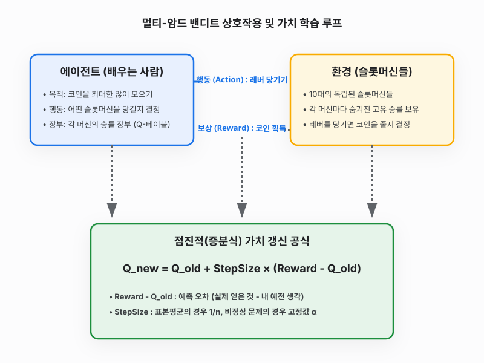

3강 밴디트 문제
그림 03-0 세 대의 서로 다른 마법 슬롯머신(HAPPINESS, LUCK, CHANCE) 앞에서 어떤 레버를 당길지 신중히 고민하는 도로시와 돋보기로 레버의 당첨 이력을 계산해주는 지니
강화학습을 관통하는 가장 위대한 딜레마는 “가장 점수를 잘 주던 잭팟 기계를 계속 당길 것인가(활용), 아니면 더 잘 줄지도 모르는 다른 기계를 탐험해 볼 것인가(탐색)”입니다. 요정 고양이 지니가 준비한 3대의 마법 슬롯머신 밴디트 문제 속에서 어떻게 하면 최적의 균형을 찾을 수 있을지 그 수학적 비밀을 풀어봅시다!
사람은 아무런 규칙을 알려주는 선생님이 없어도 스스로 계단을 오르고, 수저를 쥐고, 자전거 균형을 잡는 법을 배울 수 있습니다. 머리를 부딪쳐 아파보기도 하고, 중심을 잘 잡아 시원하게 바람을 가르는 짜릿한 기쁨을 직접 겪어보면서 말이죠. 이처럼 환경과 직접 부딪히며 스스로 더 똑똑한 규칙을 학습해 나가는 인공지능 분야를 강화 학습이라고 부릅니다.
이번 3강에서는 강화 학습의 가장 아름답고 단순한 형태인 밴디트 문제(슬롯머신 문제)를 통해, 컴퓨터가 어떻게 직접 부딪히며 최고의 잭팟 기계를 찾아내는지 그 원리를 탐구해 봅니다.
밴디트 문제를 위한 수학적 기초 (사전 준비)
밴디트 문제의 핵심은 “수많은 행동 후보군 중에서 어떤 행동이 가장 큰 평균 보상을 돌려주는가?”를 수학적으로 계산하고 예측하는 것입니다. 본 단원의 알고리즘을 코드로 직접 구현하고 이해하기 위해 꼭 알고 넘어가야 할 3가지 수학 기초 개념을 먼저 간단히 짚고 가겠습니다.
1. 확률(p)과 기댓값(E)
- 확률 (p): 어떤 무작위 사건이 일어날 가능성을
0과1사이의 숫자로 나타낸 것입니다. 예컨대 승률이 30%인 슬롯머신은 이길 확률 p = 0.3 이고, 질 확률은 1 - p = 0.7 이 됩니다. -
기댓값 (Expected Value): 어떤 무작위 시행을 무한히 반복했을 때 기대할 수 있는 평균적인 획득량입니다. 수식으로는 각 결과값(x)에 그 결과가 일어날 확률(P)을 곱하여 모두 더한 값으로 정의합니다.
\[E[X] = \sum_{x} x \cdot P(X = x)\]
[!NOTE] 기댓값 기호 E 읽기
- 기호 및 약어: 기대하다라는 뜻의 영어 단어 Expectation의 앞 글자인 대문자 E를 씁니다.
- 읽는 방법: 한국어로는 단순히 ‘기댓값’ 또는 ‘기대치’라고 읽으며, 영어식으로는 ‘이’ 또는 ‘익스펙테이션’이라고 읽습니다. 예컨대 E[X]는 “이 엑스” 혹은 “익스펙테이션 엑스”라고 발음합니다.
2. 참 가치(참값)와 표본 평균(추정값)
- 참 가치 (q*(a)): 슬롯머신 기계 내부에 프로그래밍되어 있는 진짜 평균 승률(참값)입니다. 강철 금고 안에 잠겨 있어 우리는 이를 직접 들여다볼 수 없습니다.
- 표본 평균 (Qn): 우리가 직접 기계를 n번 당겨서 얻은 보상들의 평균(추정값)입니다.
- 큰 수의 법칙 (Law of Large Numbers): 시행 횟수 n이 커지면 커질수록, 우리가 수집한 표본 평균 Qn은 진짜 참 가치 q*(a)에 완벽하게 수렴하게 된다는 통계학 법칙입니다. 우리는 이를 믿고 데이터를 열심히 수집합니다.
3. 메모리를 절약하는 평균 공식 (증분 갱신 공식)
평균을 구하기 위해 과거에 얻은 수만 개의 보상 데이터를 컴퓨터 메모리에 전부 다 저장해 두는 것은 매우 비효율적입니다. 그래서 강화학습에서는 직전 단계의 평균값(Qn-1)에 이번에 얻은 신선한 데이터(Rn) 하나만을 얹어 실시간으로 평균을 구하는 똑똑한 수학 공식을 사용합니다.
\[Q_n = Q_{n-1} + \frac{1}{n} \left( R_n - Q_{n-1} \right)\]이 공식의 아름다운 작동 원리를 흐름도로 살펴보면 아래와 같습니다.
- 예측 오차 (Rn - Qn-1): 방금 얻은 실제 보상(Rn)과 이전까지 내렸던 예상치(Qn-1)의 차이(오차)입니다.
- 가중치 (1/n): 새로운 오차를 현재 평균에 얼마나 반영할지를 결정하는 비율(시간 간격 파라미터)입니다.
이 공식을 이용하면 컴퓨터는 단 두 개의 숫자(Qn-1과 n)만 메모리에 들고 있으면서도 완벽하게 최신 평균을 실시간으로 갱신할 수 있습니다!
밴디트의 정의와 유래
강화 학습에서 가장 기본이 되는 모델인 ‘밴디트’라는 명칭은 어디서 온 것일까요?
단어의 원래 뜻
‘밴디트(Bandit)’는 원래 영어로 ‘도적’ 또는 ‘산적’을 의미하는 단어입니다.
외팔이 도적
카지노에 있는 슬롯머신 기계는 한쪽에 기다란 레버(손잡이)가 하나 달려 있습니다. 이 기계는 작동할 때마다 사람들의 돈을 마치 도둑처럼 훔쳐 가듯 다 잃게 만든다고 해서 도박꾼들 사이에서 ‘외팔이 도적(One-armed Bandit)’이라는 별명으로 불렸습니다.
멀티-암드 밴디트
우리가 이번 장에서 집중적으로 연구할 문제는 ‘멀티-암드 밴디트(Multi-armed Bandit)’, 즉 ‘여러 대의 슬롯머신 기계들 중에서 어떤 녀석이 잭팟을 가장 자주 주는지 알아내어 최대한 많은 돈을 벌어내는 기법’을 의미합니다. 이것이 강화 학습 역사의 첫 장을 장식하는 모델의 시작점입니다.
직관적으로 이해하는 강화 학습
친구들과 오락실에 갔다고 상상해 봅시다. 여기 세 종류의 알록달록한 슬롯머신 기계가 놓여 있습니다. 각 기계마다 코인이 당첨될 확률(승률)이 완전히 다르게 맞춰져 있습니다. 어떤 기계는 10% 확률로 코인을 주지만, 어떤 대박 기계는 80% 확률로 코인을 퍼줍니다.
하지만 기계 겉면에는 아무런 힌트도 적혀 있지 않습니다. 여러분에게 주어진 기회는 딱 100번뿐입니다. 여러분은 어떻게 해야 가장 많은 코인을 획득해 오락실 최고의 챔피언이 될 수 있을까요?
- 처음에는 세 기계를 골고루 당겨보며(탐색) 어떤 기계가 대박 기계인지 알아내야 합니다.
- 어느 정도 기계들의 승률을 눈치챘다면, 그중 가장 코인이 잘 나오던 기계만 집중적으로 당겨야(활용) 많은 돈을 획득할 수 있습니다.
이처럼 무작위로 동작하는 대상에 대처하여 “모험을 떠날 것인가(탐색)” 아니면 “기존 맛집에 안주할 것인가(활용)” 사이에서 현명한 줄타기를 조율하는 것이 밴디트 알고리즘의 핵심 원리입니다.
상세 개념 및 동작 루프
에이전트(컴퓨터)가 슬롯머신 환경과 버튼을 누르며 피드백을 수집하고, 수학 공식을 사용해 머릿속 장부(Q-테이블)를 점진적으로 업데이트하는 데이터 흐름도입니다.

학습 목표
이 단원을 열심히 공부하고 나면 아래 세 가지 물음에 스스로 답할 수 있게 됩니다!
- 지도 학습, 비지도 학습, 강화 학습의 차이를 명확한 비유로 설명할 수 있다.
- 밴디트 문제에서 발생하는 탐색(Exploration)과 활용(Exploitation)의 충돌 문제가 왜 생기는지 설명할 수 있다.
- 데이터 전체를 들고 있지 않고도 매번 보상이 들어올 때마다 실시간으로 평균 점수를 업데이트하는 증분식 공식의 구조를 이해한다.
학습 목차
- 3.1 머신러닝 분류와 강화 학습
- 컴퓨터를 훈련시키는 머신러닝의 세 가지 대표 줄기(지도/비지도/강화학습)의 정의와 특징을 비교합니다. 칭찬 스티커(보상)를 통해 로봇이 걷는 법을 배우는 메커니즘을 알아봅니다.
- 3.2 밴디트 문제
- 외팔이 도적이라 불리는 슬롯머신 문제를 강화 학습 용어(에이전트, 환경, 상태, 행동, 보상)로 정확하게 매핑하여 수학적 기댓값(행동 가치)으로 정의합니다.
- 3.3 밴디트 알고리즘
- 아는 맛만 먹는 활용과 새 맛집을 개척하는 탐색 사이의 딜레마를 90%의 똑똑함과 10%의 무작위성으로 풀어내는 기발한 $\epsilon$-탐욕 알고리즘을 배웁니다.
- 3.4 밴디트 알고리즘 구현
- 10대의 가상 슬롯머신을 파이썬 코드로 만들어 보고, 에이전트 클래스를 직접 조립해 200번의 독립 시뮬레이션을 돌려 평균 승률의 우수성을 눈으로 확인합니다.
- 3.5 비정상 문제
- 슬롯머신의 승률이 플레이 도중 지진처럼 수시로 삐걱거리며 달라지는 까다로운 환경에 맞서, 옛 기억은 잊어버리고 최신 보상을 중시하는 지수 이동 평균 수식을 유도합니다.
- 3.6 정리
- 3강에서 다룬 표본 평균 및 지수 이동 평균 증분 갱신 공식의 차이점 및 활용/탐색 균형의 중요성을 한눈에 깔끔히 요약하여 마칩니다.
학습 정리
- 강화 학습: 정답을 알려주는 선생님이 없는 환경에서 에이전트가 상태를 관찰하고 행동을 취하며 얻는 누적 보상의 합을 극대화하기 위해 배우는 시행착오 기법입니다.
- 탐색과 활용의 딜레마: 이미 검증된 최고 기계만 당기면 더 큰 잭팟 기계를 영영 못 찾을 수 있고(탐색 필요), 매번 탐험만 하면 돈을 쓸어 담을 수 없습니다(활용 필요). 이를 $\epsilon$-탐욕 방식으로 조율합니다.
- 증분식 평균 공식: $Q_n = Q_{n-1} + \text{가중치}(R_n - Q_{n-1})$ 공식을 쓰면 이전 메모리를 낭비하지 않고 오차를 바탕으로 실시간 학습이 가능합니다. 정상 문제에서는 가중치로 $\frac{1}{n}$을, 기계 설정이 수시로 변하는 비정상 문제에서는 고정 상수 $\alpha$를 씁니다.